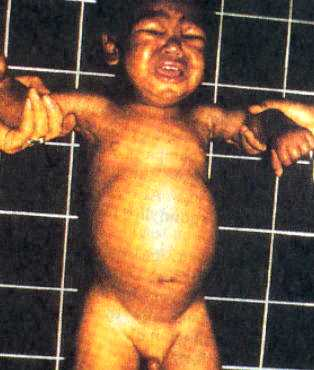

SECONDARY IMMUNODEFICIENCY
The secondary immunodeficiencies are spread much wider than primary ones. The natural periods of decreased immunity are infancy, pregnancy and senescence. The main reasons of secondary immunodeficits are different post-natal alterations of immune system. Among them are:
- The infections, especially those, hitting lymphocytes and/or macrophages. These are CMV, herpetic, hepatitis B, measles, mononucleosis, mycobacterioses, syphilis.
- The

parasite infestations (malaria, toxoplasmosis, shistosomiasis, leushmaniasis, trichinosis etc.) - Aplastic states due to action of mutagenic factors and autoallergy inducers (irradiation, radionuclides incorporation, drug and chemical influence, endogenous intoxication, like uremia).
- Neoplastic disorders (lymphomas, myeloma disease, thymoma, terminal stages of any malignancies).
- Loss of Ig and other immune equivalents without their appropriate regeneration (nephrotic syndrome, exsudative enteropathy, liver insufficiency, lymphorrhea and plasmarrhea, e.g. in burns).
- Malnutrition (famine, kwashiorkor, alimentary marasm, protein deficiency, essential aminoacids deficit, deficiency of trace elements, especially zinc and iron; hypovitaminoses, excess of dietary cholesterol) .
- Endocrine disorders (hypercortisolism, diabetes mellitus).
But, all this severe disorders suppressing the immunity in hundred millions of people and killing the millions of patients all over the world are less interesting for mass media and non-professional world community, than AIDS. Of course, the fact that in the end of XX century we have progressive pandemic of incurable viral disease is terrible enough to draw the public attention. This particular fact is a bright witness for imperfect character of all mechanisms of human adaptation, including supreme ones, dictated by culture and civilization.
But, starting with special review of AIDS, we ought to emphasize once more, that in majority of countries the cumulated medical significance and spread of non-AIDS reasons of secondary immune deficiency is still much higher than that of HIV-infection. So, these versatile and numerous causes of secondary immunodeficiency are very essential for practical health care.
NEXT CHAPTER
OR